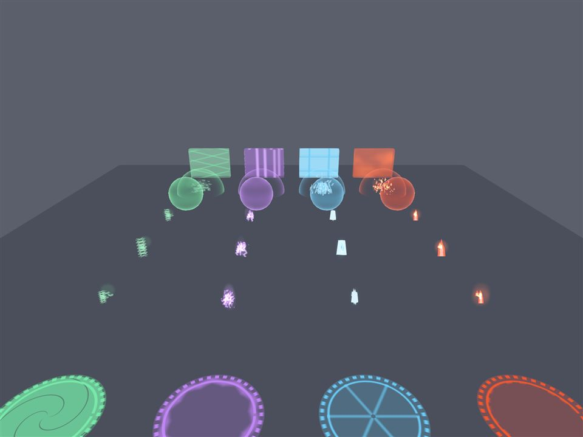

1.2.1: magias com cara e som próprios
Cada feitiço agora tem corpo de verdade: o Fogo vira um cometa, o Gelo um cristal lapidado, o Raio uma esfera de plasma cheia de faíscas e o Vento um redemoinho. Os sons também foram refeitos, e dá para reconhecer o elemento de olhos fechados.
Também afastamos a mureta da saída do spawn, organizamos as configurações em abas e acertamos os pilares dos cantos.